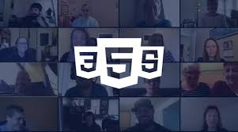
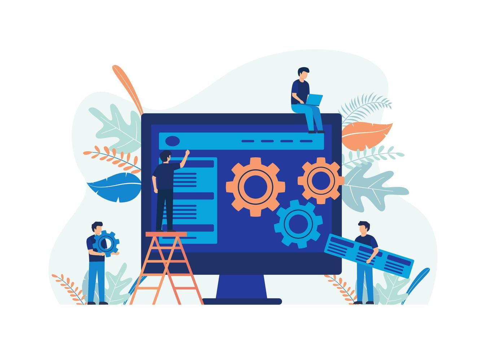

Web Development
wifi LIVE ONLINE


Programarea web (web development) este procesul de creare și construire a aplicațiilor web și a site-urilor care rulează pe internet și sunt accesate prin intermediul unui browser. Acesta include utilizarea limbajelor de programare, tehnologiilor și framework-urilor pentru a dezvolta funcționalitățile vizibile utilizatorului (frontend) și cele din spatele scenei (backend), precum și mentenanța acestora.
Certificare:

today
12.11.2025
business_center
6 luni
schedule
110 ore
euro_symbol
960
Tehnologii folosite:
- HTML: Limbajul de marcare pentru structura conținutului unei pagini web. HTML definește elementele unei pagini, cum ar fi titluri, paragrafe, imagini, linkuri și formulare.
- CSS(Cascading Style Sheets): Limbajul de stilizare utilizat pentru a controla aspectul vizual al paginilor web. El permite dezvoltatorilor să definească culori, fonturi, dimensiuni, margini, poziționarea elementelor și animații, separând designul de conținutul HTML. CSS face parte din tehnologiile fundamentale ale web-ului și ajută la crearea unor interfețe atractive, responsive și consistente.
- JavaScript: Limbajul de programare care adaugă interactivitate și funcționalități dinamice paginilor web. Javascript permite manipularea elementelor HTML, crearea de animații mai complexe, validarea formularelor, comunicarea cu serverul și dezvoltarea aplicațiilor web dinamice.
- Framework-uri: Instrumente și biblioteci care simplifică dezvoltarea, oferind structuri și funcții predefinite pentru a accelera procesul.
Te pasionează? Urmărește următorul webinar pentru mai multe detalii!
Ești pregătit? Înscrie-te acum! Poți face o programare la numărul de telefon +40755957235 sau ne poți lăsa un mesaj prin pagina de Contact, iar noi te vom suna în cel mai scurt timp. Atât tariful, cât și celelalte detalii vor fi comunicate și discutate în cadrul programării.